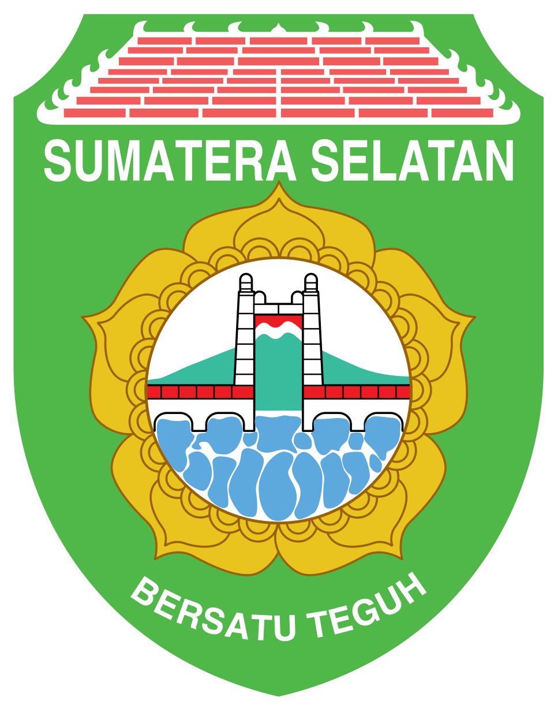

PRAKTIK KERJA LAPANGAN
PERKEBUNAN KELAPA SAWIT
( Elaeis guineensis Jacq )
DI PT DENDY MARKER INDAH LESTARI

Disusun oleh:
| NAMA | : Fahry Adhwa Ramdhani |
| NISN | : 0092684269 |
| PROGRAM KEAHLIAN | : Agribisnis Tanaman Perkebunan |
SEKOLAH MENENGAH KEJURUAN (SMK)
PERTANIAN NEGERI 2 TUGUMULYO
PROVINSI SUMATERA SELATAN
2026/2027
HALAMAN PENGESAHAN
PERKEBUNAN KELAPA SAWIT (Elaeis guineensis. Jacq)
DI PT. DENDY MARKER IDAH LESTARI JALAN : DESA BINGIN RUPIT, KECAMATAN MUARA RUPIT, KABUPATEN MUSI RAWAS UTARA (MURATARA) / MUSI RAWAS, SUMATERA SELATAN
Laporan Praktik Kerja Lapangan (PKL)
Disusun sebagai salah satu syarat mengikuti Ujian Akhir Semester Pada Sekolah Menengah Kejuruan (SMK) Pertanian Negeri 2 Tugumulyo Provinsi Sumatera Selatan Tahun Ajaran 2026/2027
Menyetujui
Ketua Panitia Pelaksan
ELIA SUSILAWATI, M.Pd
NIPPPK.19820807 202221 2 029
Pembimbing Interen
ROSMALA DEWI ,S.Pd
NIP.
Mengetahui
Kepala SMK Pertanian Negeri 2 Tugumulyo
Dr. DONNI PESTALOZI, M.Pd
NIP.19811012 200501 1 009
KATA PENGANTAR
Puji syukur penulis panjatkan atas kehadirat Allah Swt. yang telah melimpahkan serta memberikan rahmat dan karunia-Nya sehingga penulis dapat menyelesaikan pembuatan laporan Praktik Kerja Lapangan (PKL) Sekolah Menengah Kejuruan (SMK) Pertanian Negeri 2 Tugumulyo yang serangkaian kegiatannya telah dilaksanakan penulis.:
Tak ada yang tidak luput dari kesalahan yang artinya penulis dalam menyusun laporan PKL ini banyak memiliki kesalahan dan kekurangan. Maka dari itu penulis mengharapkan kritik dan saran serta ulasan agar laporan ini dapat bermanfaat terutama bagi siswa-siswi Sekolah Menengah Kejuruan (SMK) Pertanian Negeri 2 Tugumulyo.
Musirawas,
Hormat saya
Penulis,
Kelapa sawit (Elaeis guineensis Jacq.) merupakan salah satu tanaman perkebunan penting di Indonesia. Tanaman ini menghasilkan minyak yang dimanfaatkan sebagai bahan baku berbagai kebutuhan, mulai dari minyak goreng hingga produk industri lainnya. Budidaya kelapa sawit juga membuka lapangan kerja dan sumber penghasilan bagi banyak orang di daerah perkebunan, termasuk di Provinsi Sumatera Selatan.
Budidaya kelapa sawit membutuhkan pemeliharaan yang tepat dan berkelanjutan agar produksi tandan buah segar (TBS) tetap baik. Kegiatan seperti pemotongan pelepah, pemupukan, pengendalian gulma, dan panen harus dilakukan sesuai prosedur. Pengetahuan tentang kegiatan tersebut tidak cukup dipelajari di dalam kelas, sehingga siswa perlu melihat dan mengerjakannya langsung di kebun.
Praktik Kerja Lapangan (PKL) merupakan bagian dari pembelajaran di Sekolah Menengah Kejuruan (SMK) yang mempertemukan siswa dengan dunia kerja yang sesungguhnya. Melalui PKL, siswa Program Keahlian Agribisnis Tanaman Perkebunan dapat menerapkan ilmu yang diperoleh di sekolah, mengenal disiplin dan budaya kerja, serta menambah keterampilan.
Berdasarkan hal tersebut, penulis melaksanakan PKL di PT. Dendy Marker Indah Lestari yang berlokasi di Desa Bingin Rupit, Kecamatan Muara Rupit, Kabupaten Musi Rawas Utara, Sumatera Selatan. Laporan ini disusun untuk menyampaikan kegiatan dan hal-hal yang dipelajari penulis selama PKL, serta sebagai salah satu syarat mengikuti Ujian Akhir Semester.
| Waktu | : 6 Juli 2026 sampai 26 November 2026 |
| Tempat | : PT. Dendy Marker Indah Lestari (Sei Mandang Estate), Desa Bingin Rupit, Kecamatan Muara Rupit, Kabupaten Musi Rawas Utara, Sumatera Selatan |
| Pembimbing lapangan | : Bapak Fahri Alwi (asisten perkebunan kelapa sawit) |
Data dalam laporan ini diperoleh melalui:
PT. Dendy Marker Indah Lestari, disingkat DMIL dan di beberapa dokumen ditulis Dendymarker Indah Lestari, adalah perusahaan yang bergerak di bidang perkebunan dan pengolahan kelapa sawit di wilayah Musi Rawas, Provinsi Sumatera Selatan. Perusahaan ini berdiri pada tahun 1996 dan saat ini merupakan anak perusahaan SIPEF Group, kelompok usaha agribisnis asal Belgia yang juga mengelola perkebunan di beberapa daerah lain di Indonesia.
Pada tahun 2017, SIPEF membeli 95% saham PT. Dendy Marker Indah Lestari. SIPEF mengambil alih pengelolaan perusahaan mulai 1 Agustus 2017 dengan tujuan mengembangkan usahanya di wilayah Musi Rawas, termasuk kebun plasma yang dikelola petani seluas sekitar 2.780 hektare.
Sejak pengambilalihan tersebut, kebun perusahaan terus dikembangkan dan diremajakan, serta pabrik kelapa sawit tetap dikelola. Perusahaan juga mengikuti sertifikasi RSPO (Roundtable on Sustainable Palm Oil), yaitu standar produksi minyak sawit berkelanjutan.
| Nama perusahaan | : PT. Dendy Marker Indah Lestari (DMIL) |
| Tahun berdiri | : 1996 |
| Induk perusahaan | : SIPEF Group |
| Bidang usaha | : Perkebunan kelapa sawit dan pengolahan kelapa sawit |
| Lokasi tempat PKL | : Sei Mandang Estate, Desa Bingin Rupit, Kecamatan Muara Rupit, Kabupaten Musi Rawas Utara, Sumatera Selatan |
| Lokasi pabrik kelapa sawit | : Desa Karang Dapo 1, Kecamatan Karang Dapo, Kabupaten Musi Rawas Utara, Sumatera Selatan 31654 |
Kabupaten Musi Rawas Utara (Muratara) berada di Provinsi Sumatera Selatan. Penulis melaksanakan PKL di Sei Mandang Estate milik PT. Dendy Marker Indah Lestari. Lokasi PKL tercatat di Desa Bingin Rupit, Kecamatan Muara Rupit, sedangkan pabrik kelapa sawit perusahaan berada di Desa Karang Dapo 1, Kecamatan Karang Dapo.
Selama melaksanakan PKL di Sei Mandang Estate, penulis ikut melakukan dan mempelajari beberapa kegiatan perkebunan kelapa sawit. Bab ini memuat tiga kegiatan yang dipelajari, yaitu sensus buah hitam (Black Bunch Count), panen, dan pemupukan.
a. Pengertian dan Tujuan. Black Bunch Count (BBC) adalah sensus buah hitam, yaitu menghitung jumlah janjang yang akan dipanen sampai dengan 4 bulan ke depan. Tandan buah memerlukan waktu 6 bulan untuk menjadi buah siap panen. Karena itu, perhitungan dilakukan berdasarkan jumlah janjang menurut umur buah, yaitu umur 3, 4, 5, dan 6 bulan. Tujuan BBC adalah menghitung potensi produksi dalam 4 bulan ke depan.
b. Waktu dan Frekuensi. BBC dilaksanakan setiap bulan, yaitu 12 kali dalam setahun. Sensus dilakukan pada minggu terakhir bulan berjalan, setelah panen terakhir di blok tersebut.
c. Alat dan Bahan.
d. Persiapan Data Area Statement. Sebelum melakukan BBC, diperlukan data jumlah tanaman dan jumlah tegakan per hektar (SPH), berat rata-rata per janjang (BJR), dan estimasi atau perkiraan produksi tahun berjalan.
e. Penentuan Pokok Sampel. Jumlah pokok sampel yang digunakan sebanyak 5% dari total pokok dalam satu blok. Pokok sampel harus mewakili seluruh kondisi topografi, yaitu datar, puncak, teras, dan rendahan.
f. Pelaksanaan Sensus.
g. Perhitungan Potensi Produksi. Sensus dilakukan setelah panen berakhir pada bulan tersebut. Potensi produksi dihitung dengan rumus:
Produksi (ton) = (jumlah pokok × BJR (kg) × janjang/pokok) ÷ 1.000
h. Validasi dan Akurasi. Akurasi perhitungan BBC tidak kurang dari 95%, kecuali pada keadaan khusus tidak kurang dari 90%. Jika kesalahan melebihi 5% (atau 10% pada keadaan khusus), diperlukan perhitungan ulang.
i. Kapasitas Kerja. Kapasitas kerja BBC menurut umur tanaman:
| Umur tanaman | Kapasitas kerja |
| 4 - 7 tahun | 30 ha/HK |
| 8 - 15 tahun | 25 ha/HK |
| lebih dari 15 tahun | 20 ha/HK |
j. Pelaporan dan Tanggung Jawab. Pengambilan data terakhir di lapangan dilakukan setiap bulan paling lambat pada akhir bulan (tanggal 28 atau 29 untuk Februari, dan tanggal 30 atau 31 untuk bulan lainnya). Jika tanggal tersebut bertepatan dengan hari libur, pelaporan dimajukan 1 hari sebelumnya. Alur pelaporan setiap bulan:
Formulir yang digunakan (Rev 6): F-01 Formulir BBC, F-02 Laporan dan Detail per Blok dan Divisi, serta F-03 Laporan BBC Estate. Manager Estate (EM) bertanggung jawab untuk:
a. Pengertian dan Tujuan. Panen dalam perkebunan kelapa sawit adalah kegiatan memotong tandan buah segar (TBS) yang sudah matang dari pohon, mengutip brondolan (buah yang lepas), serta mengangkutnya ke tempat pengumpulan hasil (TPH) untuk dikirim ke pabrik. Panen merupakan aktivitas terakhir dan penting pada perkebunan kelapa sawit. Tujuannya adalah memanen semua tandan buah segar, mengumpulkan semua brondolan, dan mempertahankan rotasi panen secara optimal.
b. Ruang Lingkup. Prosedur panen meliputi semua kegiatan panen hingga produksi dilansir ke tempat penumpukan hasil. Prosedur ini mencakup area young, prime, old mature, dan jalur listrik.
c. Alat, Bahan, dan Dokumen.
d. Syarat Pelaksanaan. Agar panen menghasilkan produksi tinggi dengan kualitas terbaik, pelaksanaannya harus memenuhi hal berikut:
e. Jam Kerja.
| 06.30 | : wajib apel |
| 07.15 | : sudah mulai kerja |
| 12.00 - 13.00 | : istirahat |
| 13.00 - 15.00 | : kerja kembali |
| 15.00 | : pulang |
f. Rotasi Panen (Ron) dan Performa Kerja. Ron masuk panen disebut juga rotasi panen atau putaran panen. Performa kerja panen: luas kerja 2 sampai 4 hektar per hari per pemanen; kapasitas 1.200 sampai 3.000 kg per hari per pemanen; satu pemanen mencakup area 15 sampai 23 hektar; dan jumlah pemanen per mandoran 15 sampai 20 orang. Jika rotasi terlalu pendek, pemanen dapat membantu divisi lain yang rotasi panennya panjang atau melakukan pruning. Jika rotasi terlalu panjang, FA dapat mengajukan permohonan bekerja pada hari Minggu, bantuan dari divisi lain, atau penambahan tenaga kerja. Jika staf mampu memprediksi kapan rotasi berlangsung, misalnya sebelum hari raya Idul Fitri, staf dapat mengatur untuk menurunkan rotasi panen menjadi 5 hari sebelumnya dengan menerapkan metode yang telah disebutkan. Cara lain adalah mengubah standar panen menjadi 1 sampai 2 brondolan di dalam piringan, dengan harapan setelah lebaran pekerja dapat bekerja lebih cepat serta mengurangi rotasi panen.
g. Kriteria Kematangan Buah.
Berdasarkan brondolan yang jatuh, mutu buah dibagi menjadi normal, mentah (tidak ada brondolan), mengkal (brondolan kurang dari 5), dan overripe (brondolan lebih dari 50%).
h. Sapta Panen. Tujuh prinsip panen yang harus dipenuhi:
i. Pengumpulan Brondolan. Brondolan memiliki rendemen yang tinggi (40% - 50%), sehingga semua brondolan harus dikumpulkan, termasuk yang tersangkut di batang. Brondolan diletakkan di dalam atau di atas karung bekas pupuk dan bebas kontaminasi atau sampah. Pada estate yang memiliki pembrondol, seorang pembrondol mengikuti seorang pemanen dan mengumpulkan semua brondolan dari buah yang telah dipanen. Pada estate tanpa pembrondol, pemanen mengumpulkan brondolan dan buah secara bersamaan, kemudian membawanya ke TPH. Buah overripe diambil brondolnya saja menggunakan ganco, dan janjangan kosongnya tidak perlu diikutsertakan. Tidak dibenarkan ada buah busuk di pohon.
j. Penyusunan Buah di TPH. Janjang buah dikumpulkan dan ditempatkan pada TPH di tepi collection road. Janjang disusun 5 atau 10 per baris agar mudah dihitung. TBS (FBB) di setiap TPH disusun dengan posisi gagang buah mengarah ke bawah, kecuali 2 janjang yang mengarah ke atas untuk penulisan identitas pemanen dan jumlah janjang. Cara ini juga memudahkan pemeriksaan mutu TBS.
k. Panen di Jalur Listrik (PLN).
l. Kebersihan Lingkungan. Pelepah dan sampah bekas pruning tidak boleh menutupi parit dan DAS.
m. Standar Kehilangan Panen. Berat buah yang sama dengan OER dapat mencapai 25%. Kehilangan panen dihitung dari jumlah brondolan yang terlepas dan jatuh dari tandan buah di piringan.
n. Pengaturan Ancak. Mandor harus mengatur ancak pemanen agar pemanen tidak perlu berbolak-balik menyeberangkan buah.
o. Kalibrasi Panen. Kalibrasi panen dilakukan pukul 08.50 - 09.15 di blok F13. Total pohon yang dipanen 10 pohon dengan total buah 12 janjang. Total pohon dalam satu lorong 66 palm (per baris 33), satu lorong tembus.
a. Pupuk NPK 12. Pupuk NPK 12 mengandung N 12%, P2O5 12%, K2O 12%, dan MgO 2%. Bentuknya granular (butiran) bulat, berwarna coklat, kuning, atau biru.
b. Pelaksanaan.